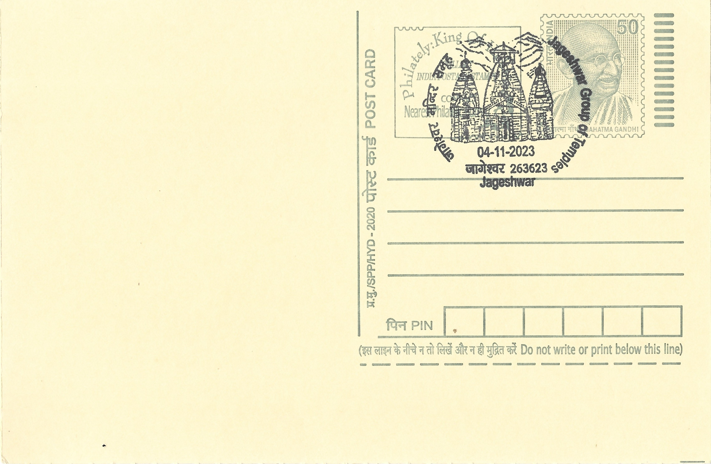
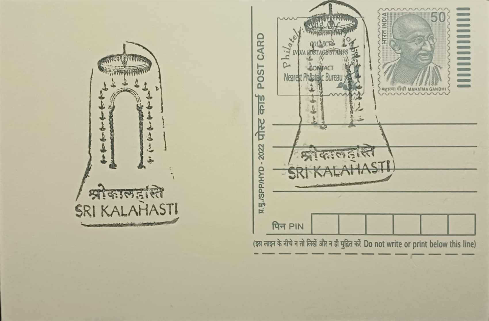
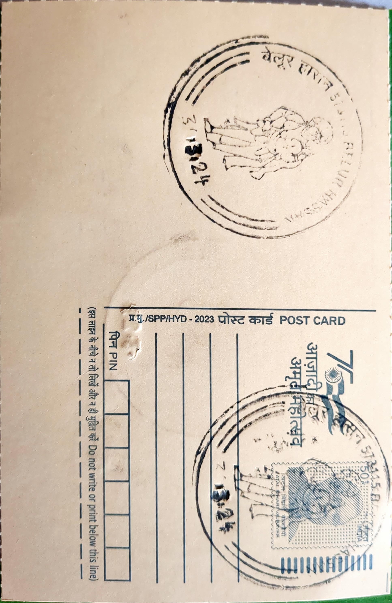
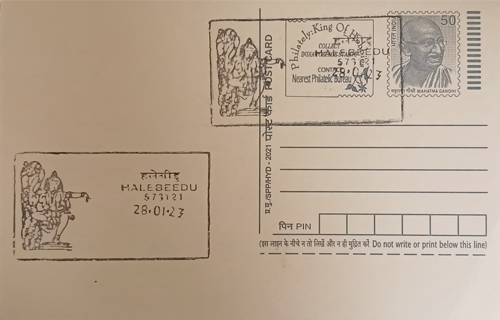
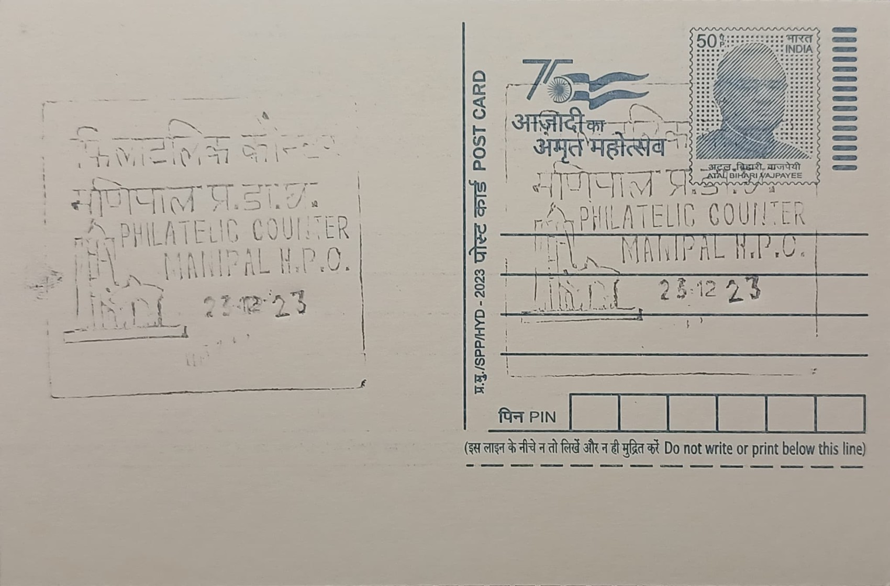
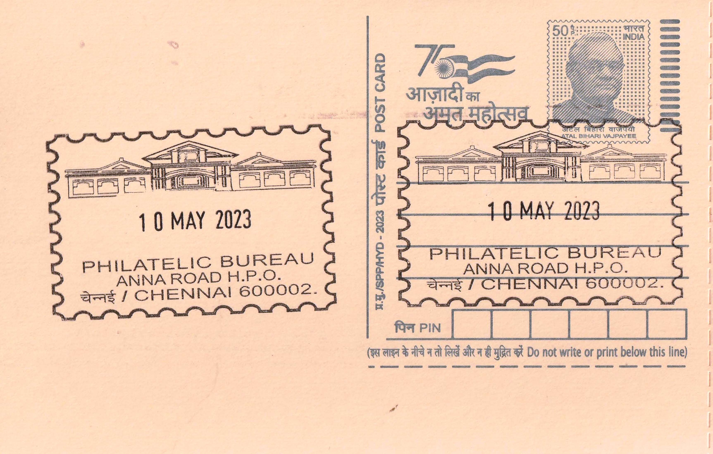
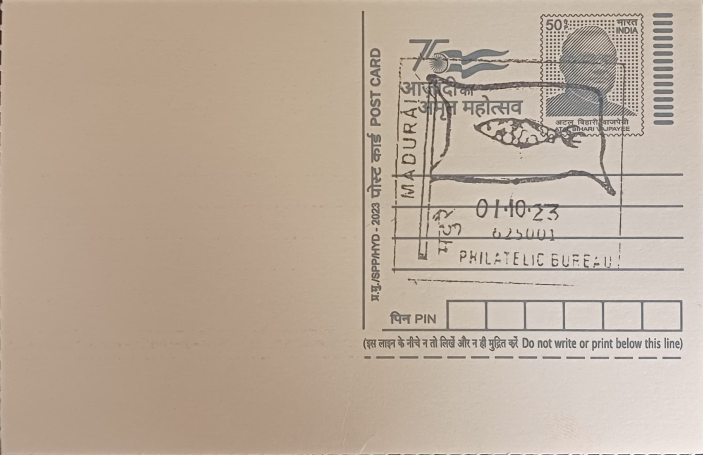
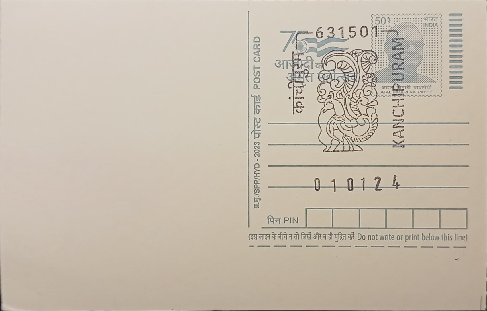
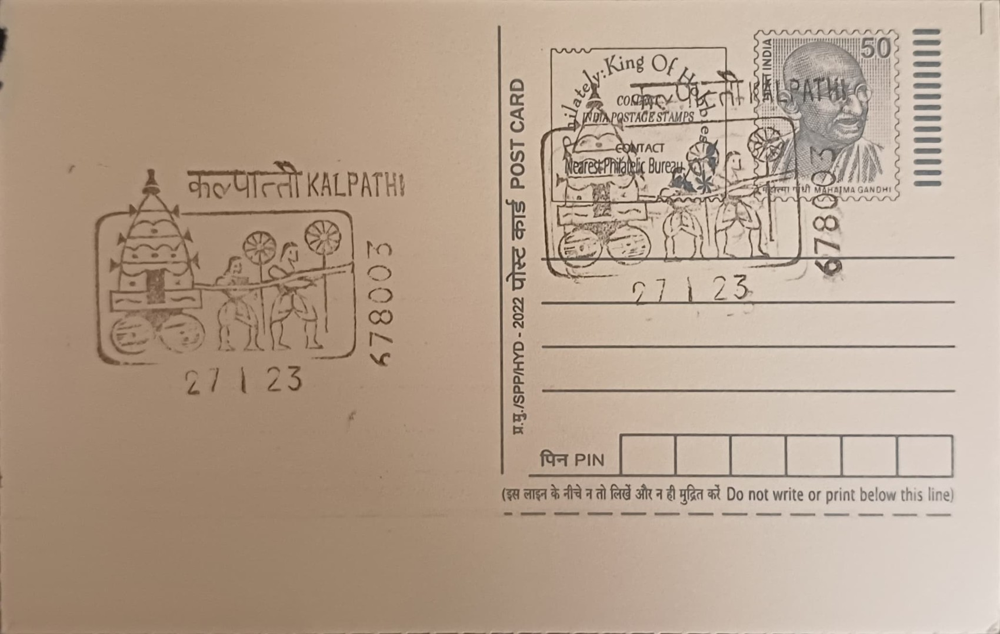
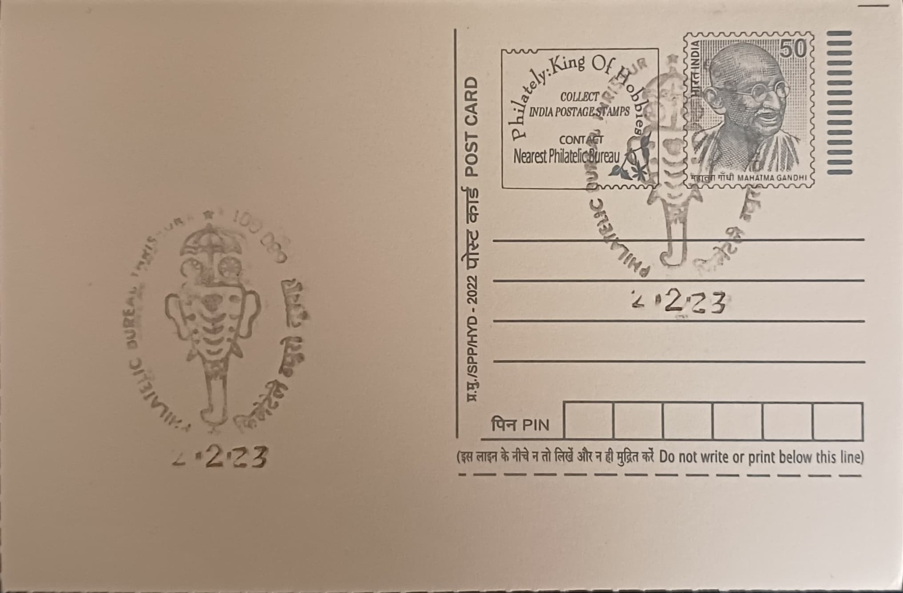

| 1 | Parliament of India | 13.02.1995 | Sansad Marg NA | Central Delhi | DELHI | 110001 |  |
| 2 | Rashtrapati Bhavan | 17.03.2005 | Rashtrapati Bhavan SO | Central Delhi | DELHI | 110004 |  |
| 3 | Red Fort | 01.12.1975 | Red Fort NA | North Delhi | DELHI | 110006 |  |
| 4 | Red Fort | 22.11.2023 | Philatelic Gallery, Red Fort | North Delhi | DELHI | 110006 |  |
| 5 | Qutub Minar | 15.01.1955 | Qutub Minar NA | South West Delhi | DELHI | 110030 |  |
| 6 | Sri Harmandir Sahib (Golden Temple) | 20.01.1982 | Amritsar GPO-PB | Amritsar | PUNJAB | 143001 |  |
| 7 | Rose Flower, Open Hand Monument, Sukhna Lake, Yacht and Shivalik Hills | 20.07.1991 | Chandigarh GPO | Chandigarh | CHANDIGARH | 160017 |  |
| 8 | Himalayan Monal | 28.05.2004 | Shimla GPO-PB | Shimla | HIMACHAL PRADESH | 171001 | |
| 9 | Tabo Monastery | 22.03.2022 | Tabo SO | Lahaul and Spiti | HIMACHAL PRADESH | 172113 |  |
| 10 | Hikkim Post Office | 22.03.2022 | Hikkim BO | Lahaul and Spiti | HIMACHAL PRADESH | 172114 |  |
| 11 | Key Monastery | 22.03.2022 | Kee Gompa BO | Lahaul and Spiti | HIMACHAL PRADESH | 172114 | |
| 12 | Chicham Bridge | 22.03.2022 | Kibber BO | Lahaul and Spiti | HIMACHAL PRADESH | 172114 |  |
| 13 | Sri Hidimba Devi Temple | 16.08.2004 | Manali SO | Kullu | HIMACHAL PRADESH | 175131 |  |
| 14 | Jawalamukhi Temple | 24.11.2004 | Jawalamukhi SO | Kangra | HIMACHAL PRADESH | 176031 |  |
| 15 | Himalayas and Paragliding | 26.11.2022 | Bir SO | Kangra | HIMACHAL PRADESH | 176077 | |
| 16 | Dhauladhar Mountains, Kangra Tea & Temple | 10.08.2020 | Dharamsala HO | Kangra | HIMACHAL PRADESH | 176215 | |
| 17 | Himalayas and Mane Prayer Wheel | 26.11.2022 | Mcleodganj SO | Kangra | HIMACHAL PRADESH | 176219 | |
| 18 | Raghunath Mandir | 23.10.2022 | Raghunath Bazaar SO | Jammu | JAMMU AND KASHMIR | 180001 | |
| 19 | Vaishno Devi Temple | 22.08.2007 | Katra SO | Reasi | JAMMU AND KASHMIR | 182301 |  |
| 20 | Chinar Leaves | 05.09.1980 | Srinagar GPO | Srinagar | JAMMU AND KASHMIR | 190001 |  |
| 21 | Dal Lake and Shikara | 26.12.2022 | Srinagar GPO | Srinagar | JAMMU AND KASHMIR | 190001 |  |
| 22 | Shikara in Dal Lake | 13.09.1978 | Nehru Park SO | Srinagar | JAMMU AND KASHMIR | 190001 |  |
| 23 | Lal Chowk | 23.05.2013 | Lal Chowk SO | Srinagar | JAMMU AND KASHMIR | 190001 |  |
| 24 | Gondola Ropeway | 11.10.2022 | Gulmarg SO | Baramulla | JAMMU AND KASHMIR | 193403 |  |
| 25 | Shanti Stupa | 14.10.2022 | Leh HO | Leh | LADAKH | 194101 |  |
| 26 | Aligarh Lock | 03.11.2023 | Aligarh HO | Aligarh | UTTAR PRADESH | 202001 | |
| 27 | Sarnath Temple | 19.10.1982 | Varanasi HO-PB | Varanasi | UTTAR PRADESH | 221001 |  |
| 28 | Shri Kashi Vishwanath Mandir, Varanasi | 13.12.2021 | Varanasi HO-PB | Varanasi | UTTAR PRADESH | 221001 | |
| 29 | Hanuman Garhi, Ayodhya | 04.12.2021 | Ayodhya HO | Ayodhya | UTTAR PRADESH | 224001 | |
| 30 | Shri Ram Janmbhoomi Temple | 22.01.2024 | Ayodhya HO | Ayodhya | UTTAR PRADESH | 224001 |  |
| 31 | Husainabad Clock Tower | 13.10.1998 | Lucknow GPO-PB | Lucknow | UTTAR PRADESH | 226001 | |
| 32 | Rose Flower | 01.07.1977 | Gokhale Marg SO | Lucknow | UTTAR PRADESH | 226001 |  |
| 33 | Raj Bhawan, Lucknow | 15.05.2023 | UP Governor Camp SO | Lucknow | UTTAR PRADESH | 226027 |  |
| 34 | Dr. B. R. Ambedkar Uttar Pradesh Police Academy | 29.12.2022 | PTC Moradabad SO | Moradabad | UTTAR PRADESH | 244001 | |
| 35 | Taj Mahal | 03.06.1981 | Agra HO-PB | Agra | UTTAR PRADESH | 282001 |  |
| 36 | Taj Mahal | Not Available | Taj SO | Agra | UTTAR PRADESH | 282001 |  |
| 37 | Taj Mahal | Not Available | Taj SO | Agra | UTTAR PRADESH | 282001 | |
| 38 | Buland Darwaza | Not Available | Fatehpur Sikri SO | Agra | UTTAR PRADESH | 283110 |  |
| 39 | Spotted Deer-Save Our Heritage, Preserve Wildlife | 24.01.1976 | Corbett National Park, Dhikala BO | Nainital | UTTARAKHAND | 244715 |  |
| 40 | Himalayas and Kedarnath Temple | 16.06.1983 | Dehradun PB | Dehradun | UTTARAKHAND | 248001 |  |
| 41 | Himalayas and Badrinath Temple | 04.11.2013 | Dehradun PB | Dehradun | UTTARAKHAND | 248001 | |
| 42 | Lal Bahadur Shastri National Academy of Administration | 17.03.2022 | NAA Mussoorie SO | Dehradun | UTTARAKHAND | 248179 |  |
| 43 | Mountains | Not Available | Nainital PB | Nainital | UTTARAKHAND | 263001 | |
| 44 | Jageshwar Group of Temples | 04.11.2023 | Jageshwar BO | Almora | UTTARAKHAND | 263623 |  |
| 45 | Hawa Mahal | 18.11.1977 | Jaipur GPO-PB | Jaipur | RAJASTHAN | 302001 |  |
| 46 | Hawa Mahal | 27.09.2005 | Tripolia Bazaar SO | Jaipur | RAJASTHAN | 302002 | |
| 47 | Sundial, Jai Singh Observatory | 06.03.1977 | Rambagh Palace, Jaipur SO | Jaipur | RAJASTHAN | 302005 |  |
| 48 | Ganesh Pol, Amer Fort | 18.11.2001 | Amer SO | Jaipur | RAJASTHAN | 302028 |  |
| 49 | Amer Fort | 02.11.2023 | Amer SO | Jaipur | RAJASTHAN | 302028 |  |
| 50 | Prithviraj Chauhan | 01.11.2011 | Ajmer HO-PB | Ajmer | RAJASTHAN | 305001 |  |
| 51 | Ranakpur Jain Temple | 12.04.2008 | Ranakpur BO | Pali | RAJASTHAN | 306702 |  |
| 52 | Delwara Jain Temple | Not Available | Mount Abu SO | Sirohi | RAJASTHAN | 307501 |  |
| 53 | Delwara Jain Temple | 27.02.1986 | Delwara BO | Sirohi | RAJASTHAN | 307501 |  |
| 54 | Vijay Stambh or Victory Tower | 15.12.1980 | Chittorgarh HO | Chittorgarh | RAJASTHAN | 312001 |  |
| 55 | Maharana Pratap | 21.03.1978 | Panchwati Udaipur SO | Udaipur | RAJASTHAN | 313001 |  |
| 56 | Maharana Pratap | Not Available | Shastri Circle Udaipur SO | Udaipur | RAJASTHAN | 313001 |  |
| 57 | Ghana Bird Sanctuary | Not Available | Bharatpur HO | Bharatpur | RAJASTHAN | 321001 |  |
| 58 | Siberian Crane | 21.08.1993 | Forest Lodge, Bharatpur BO | Bharatpur | RAJASTHAN | 321001 |  |
| 59 | Ranathambore Fort | 27.09.1992 | Sawai Madhopur HO | Sawai Madhopur | RAJASTHAN | 322001 |  |
| 60 | Shri Mahaveer Mandir | 28.11.2022 | Shrimahaveerji SO | Karauli | RAJASTHAN | 322220 |  |
| 61 | BITS Pilani Clock Tower | 12.11.2005 | BITS Pilani SO | Jhunjhunu | RAJASTHAN | 333031 |  |
| 62 | Acharya Tulsi Shakti Peeth | 31.12.2004 | Gangashahar SO | Bikaner | RAJASTHAN | 334001 |  |
| 63 | Shri Karni Mata | 21.02.2004 | Deshnoke SO | Bikaner | RAJASTHAN | 334801 |  |
| 64 | Mehrangarh Fort | 03.08.1984 | Jodhpur HO | Jodhpur | RAJASTHAN | 342001 |  |
| 65 | Alfred High School | 02.10.1991 | Rajkot HO-PB | Rajkot | GUJARAT | 360001 |  |
| 66 | Mohandas Gandhi Vidyalaya | Not Available | Rajkot HO-PB | Rajkot | GUJARAT | 360001 |  |
| 67 | Mahatma Gandhi Museum | 02.10.2020 | Rajkot HO-PB | Rajkot | GUJARAT | 360001 | |
| 68 | Kirti Mandir-The Birth Place of Mahatma Gandhi | 18.04.1992 | Porbandar HO | Porbandar | GUJARAT | 360575 |  |
| 69 | Arabian Sea Octopus | 02.01.2011 | Jamnagar HO | Jamnagar | GUJARAT | 361001 |  |
| 70 | Arabian Sea & Bet Dwarka | 08.04.2011 | Bet SO | Devbhoomi Dwarka | GUJARAT | 361330 | |
| 71 | Dwarkadhish Temple, Land of Sri Krishna | 16.07.1984 | Dwarka SO | Devbhoomi Dwarka | GUJARAT | 361335 | |
| 72 | Asiatic Lions & Visit Sasan Gir Wildlife Sanctuary | 01.11.1975 | Sasan Gir SO | Junagadh | GUJARAT | 362135 |  |
| 73 | Sri Somnath Temple | 16.02.1977 | Prabhas Patan SO | Gir Somnath | GUJARAT | 362268 |  |
| 74 | Indian Wild Ass | 14.10.2010 | Dhrangadhra MDG-SO | Surendranagar | GUJARAT | 363310 | |
| 75 | Siddha Chakra | 03.07.1992 | Palitana SR SO | Bhavnagar | GUJARAT | 364270 | |
| 76 | Visit Flamingo City, Bird Sanctuary | 16.07.1984 | Bhuj HO | Kachchh | GUJARAT | 370001 | |
| 77 | Harappan Culture | 02.02.2021 | Dholavira BO | Kachchh | GUJARAT | 370165 |  |
| 78 | Kachchhi Mudwork | 02.02.2021 | Khavda SO | Kachchh | GUJARAT | 370510 | |
| 79 | Lakhpat Fort, Kachchhh | 02.02.2021 | Lakhpat BO | Kachchh | GUJARAT | 370627 |  |
| 80 | Architectural Delights Sidi Saiyad’s Window | 16.07.1984 | Ahmedabad GPO | Ahmedabad | GUJARAT | 380001 |  |
| 81 | Sardar Vallabhbhai Patel National Memorial | 14.08.2006 | Shahibaug SO | Ahmedabad | GUJARAT | 380004 |  |
| 82 | Kocharab Satyagraha Ashram Smarak | 30.01.1998 | Ellisbridge SO | Ahmedabad | GUJARAT | 380006 | |
| 83 | Adalaj Stepwell | 27.03.1986 | Navrangpura HO | Ahmedabad | GUJARAT | 380009 |  |
| 84 | Sidi Saiyad’s Mosque Window | 31.03.2007 | IIM, Ahmedabad SO | Ahmedabad | GUJARAT | 380015 |  |
| 85 | Hridaykunj Sabarmati Ashram | 06.04.1976 | Gandhi Ashram SO | Ahmedabad | GUJARAT | 380027 |  |
| 86 | Spinning Wheel (Charakha) | 30.01.1995 | Gandhi Ashram SO | Ahmedabad | GUJARAT | 380027 | |
| 87 | Sabarmati Ashram | 30.11.2021 | Gandhi Ashram SO | Ahmedabad | GUJARAT | 380027 |  |
| 88 | Lothal Seal | 17.12.1997 | Lothal Bhurkhi Railway Station SO | Ahmedabad | GUJARAT | 382230 |  |
| 89 | Rani Ki Vav (Stepwell) | 09.10.2002 | Patan (NG) SO | Patan | GUJARAT | 384265 |  |
| 90 | Surya Temple | 02.04.1977 | Modhera SO | Mehsana | GUJARAT | 384412 |  |
| 91 | Birth Place of Sardar Vallabhbhai Patel | 31.10.2020 | Nadiad HO | Kheda | GUJARAT | 387001 | |
| 92 | Shri Ranchhordraiji Maharaj Temple | 13.11.2022 | Dakor SO | Kheda | GUJARAT | 388225 | |
| 93 | Sardar Vallabhbhai Patel | 31.10.2002 | Karamsad SO | Anand | GUJARAT | 388325 | |
| 94 | Chamar Dharini | 16.01.1989 | Vadodara HO | Vadodara | GUJARAT | 390001 |  |
| 95 | Maharaja Sayajirao Gaekwad | 16.01.1989 | Vadodara Fateganj HO | Vadodara | GUJARAT | 390002 | |
| 96 | Sardar Sarovar Project and Statue of Unity (1) | 09.10.1990 | Kevadia Colony SO | Narmada | GUJARAT | 393151 | -KevadiaColonySO.jpg) |
| 97 | Sardar Sarovar Project and Statue of Unity (2) | 31.10.2020 | Kevadia Colony SO | Narmada | GUJARAT | 393151 | -KevadiaColonySO.jpg) |
| 98 | Hajira Lighthouse | 21.09.2021 | Hajira SO | Surat | GUJARAT | 394270 |  |
| 99 | Musical Instruments of Local Tribes | 27.03.1984 | Saputara SO | Dang | GUJARAT | 394720 |  |
| 100 | Diu Fort | 03.01.2022 | Diu SO | Junagadh | DADRA AND NAGAR HAVELI AND DAMAN AND DIU | 362520 |  |
| 101 | Trimurthi | 26.01.1977 | Mumbai GPO-PB | Mumbai City | MAHARASHTRA | 400001 |  |
| 102 | Mumbai GPO Building | 14.07.2023 | Mumbai GPO-PB | Mumbai City | MAHARASHTRA | 400001 |  |
| 103 | Gateway of India | 28.12.2023 | Taj Mahal SO | Mumbai City | MAHARASHTRA | 400001 |  |
| 104 | Trimurthi | 16.04.1992 | Elephanta Caves BO | Mumbai | MAHARASHTRA | 400021 |  |
| 105 | Pune Head Post Office Building | 04.10.1977 | Pune HO-PB | Pune | MAHARASHTRA | 411001 |  |
| 106 | Shaniwar Wada | 02.03.1992 | Shaniwar Peth SO | Pune | MAHARASHTRA | 411030 |  |
| 107 | Pratapgad Fort | 18.12.2023 | Pratapgad BO | Satara | MAHARASHTRA | 412806 | |
| 108 | Vithoba Temple | 26.01.1977 | Pandharpur HO | Solapur | MAHARASHTRA | 413304 |  |
| 109 | Kirloskar Engine | 24.11.2022 | Kirloskarvadi SO | Sangli | MAHARASHTRA | 416308 |  |
| 110 | Chand Minar | 26.01.1977 | Daulatabad BO | Chhatrapati Sambhajinagar | MAHARASHTRA | 431002 | |
| 111 | Deep Stambh | 08.01.1965 | Ellora Caves BO | Chhatrapati Sambhajinagar | MAHARASHTRA | 431102 |  |
| 112 | Entrance of Cave-19 (1) | 08.01.1965 | Ajanta Caves BO | Chhatrapati Sambhajinagar | MAHARASHTRA | 431117 | .jpg) |
| 113 | Entrance of Cave-19 (2) | 26.01.1977 | Ajanta Caves BO | Chhatrapati Sambhajinagar | MAHARASHTRA | 431117 | .jpg) |
| 114 | Six Tusk Elephant | 26.11.1991 | Ajanta Caves BO | Chhatrapati Sambhajinagar | MAHARASHTRA | 431117 | |
| 115 | Nagpur GPO Building | 13.10.2020 | Nagpur GPO | Nagpur | MAHARASHTRA | 440001 |  |
| 116 | Deekshabhoomi | 14.04.2023 | Shankar Nagar SO | Nagpur | MAHARASHTRA | 440010 |  |
| 117 | Lonar Lake | 11.10.2022 | Lonar SO | Buldhana | MAHARASHTRA | 443302 |  |
| 118 | Indian Bison, Cashew, Fish, and Coconut Tree | 13.10.2020 | Panaji HO-PB | North Goa | GOA | 403001 | |
| 119 | Reis Magos Fort | 13.12.2021 | Reis Magos SO | North Goa | GOA | 403114 |  |
| 120 | Basilica of Bom Jesus | 09.10.2020 | Velha Goa SO | North Goa | GOA | 403402 |  |
| 121 | Mangueshi Temple | 02.12.2021 | Mardol SO | South Goa | GOA | 403404 |  |
| 122 | Tambdi Surla | 13.12.2021 | Sancordem BO | South Goa | GOA | 403406 | |
| 123 | Bondla Wildlife Sanctuary | 15.12.2021 | Usgaon BO | South Goa | GOA | 403406 |  |
| 124 | Malabar Tree-Nymph | 03.03.2022 | Valpoi SO | North Goa | GOA | 403506 |  |
| 125 | Fort Aguada Lighthouse | 30.11.2021 | Candolim SO | North Goa | GOA | 403515 |  |
| 126 | Margao Head Post Office Building | 17.12.2021 | Margao HO | South Goa | GOA | 403601 |  |
| 127 | Humpback Dolphin | 22.02.2022 | Palolem BO | South Goa | GOA | 403702 |  |
| 128 | Big Foot Sculpture of Meerabai | 12.10.2018 | Loutulim SO | South Goa | GOA | 403718 |  |
| 129 | Olive Ridley Turtle | 21.03.2022 | Loliem SO | South Goa | GOA | 403728 | |
| 130 | Rajwada Palace and India Post Logo | 11.02.2021 | Indore GPO | Indore | MADHYA PRADESH | 452001 | |
| 131 | Sanchi Stupa | 01.01.1966 | Sanchi SO | Raisen | MADHYA PRADESH | 464661 |  |
| 132 | Udaigiri Caves-Varaha (Boar) Carving | Not Available | Udaigiri BO | Vidisha | MADHYA PRADESH | 464668 |  |
| 133 | Bhimbetka | Not Available | Ankalpur BO | Raisen | MADHYA PRADESH | 464993 | |
| 134 | Khajuraho Temple | 18.02.1965 | Khajuraho SO | Chhatarpur | MADHYA PRADESH | 471606 |  |
| 135 | Badal Mahal | 06.08.2019 | Chanderi SO | Ashok Nagar | MADHYA PRADESH | 473446 | |
| 136 | Steel Ladle | 03.02.1984 | Civic Centre, Bhilai SO | Durg | CHHATTISGARH | 490006 | |
| 137 | Bhoramdeo Temple | 11.10.2023 | Chhapri BO | Kabirdham | CHHATTISGARH | 491995 | |
| 138 | Thermal Power Plant | 29.01.1992 | Raipur GPO-PB | Raipur | CHHATTISGARH | 492001 |  |
| 139 | Chhattisgarh - A "Rice Bowl" | 27.09.2023 | Raipur GPO-PB | Raipur | CHHATTISGARH | 492001 |  |
| 140 | Sirpur Ancient City | 01.12.2012 | Sirpur BO | Mahasamund | CHHATTISGARH | 493445 |  |
| 141 | Rudra Shiv Sculpture | 09.10.1993 | Bilaspur HO | Bilaspur | CHHATTISGARH | 495001 | |
| 142 | Lemru Elephant Reserve | 11.10.2023 | Bango Dam BO | Korba | CHHATTISGARH | 495448 | |
| 143 | Kotmi Sonar Crocodile Park | 11.10.2023 | Kotmi Sonar BO | Janjgir-Champa | CHHATTISGARH | 495552 | |
| 144 | Old Tibetan Buddhist Monastery | 11.10.2023 | Kamleshwarpur BO | Surguja | CHHATTISGARH | 497111 | |
| 145 | Charminar | 21.04.1975 | Hyderabad GPO | Hyderabad | TELANGANA | 500001 | |
| 146 | Osmania University | 11.10.1976 | Jama-I-Osmania SO | Hyderabad | TELANGANA | 500007 |  |
| 147 | Golconda Fort | 27.09.2021 | Golconda SO | Hyderabad | TELANGANA | 500008 |  |
| 148 | Ronald Ross Building | 20.08.2021 | Begumpet SO | Hyderabad | TELANGANA | 500016 | |
| 149 | Railway Engine | 11.02.1976 | Rail Nilayam SO | Hyderabad | TELANGANA | 500025 | |
| 150 | Buddha Statue | 01.12.2021 | Himayath Nagar SO | Hyderabad | TELANGANA | 500029 | |
| 151 | Medak Cathedral | 17.12.2021 | Medak HO | Medak | TELANGANA | 502110 | |
| 152 | Warangal Gate | 01.08.1975 | Warangal HO | Warangal | TELANGANA | 506002 | |
| 153 | Bhakta Ramadasu | 09.04.1976 | Bhadrachalam HO | Bhadradri Kothagudem | TELANGANA | 507111 | |
| 154 | Tirumala Gopuram, Sankhu, and Chakra | 14.10.1975 | Tirupati HO | Tirupati | ANDHRA PRADESH | 517501 |  |
| 155 | Tallapaka Annamacharya | 06.11.1976 | Tirumala SO | Tirupati | ANDHRA PRADESH | 517504 | |
| 156 | Deity of Sri Kalahasteeswara Swamy | 14.02.1980 | Srikalahasti HO | Tirupati | ANDHRA PRADESH | 517644 |  |
| 157 | Gopuram of Sri Mallikarjuna Swamy Temple | 07.03.1978 | Srisailam SO | Nandyala | ANDHRA PRADESH | 518101 |  |
| 158 | Amaravathi Stupa | 11.02.1976 | Amaravathi SO | Palnadu | ANDHRA PRADESH | 522020 |  |
| 159 | ISRO Radar | 20.04.1976 | Sriharikota Range SO | Tirupati | ANDHRA PRADESH | 524124 |  |
| 160 | Dolphin’s Nose Lighthouse | 10.04.1982 | Visakhapatnam HO | Visakhapatnam | ANDHRA PRADESH | 530001 |  |
| 161 | Ancient Marine Craft from the Legend of Buddha | 30.09.1975 | Visakhapatnam Shipyard HO | Visakhapatnam | ANDHRA PRADESH | 530001 |  |
| 162 | Gopuram of Sri Varaha Lakshmi Narasimha Swamy Temple | 25.07.1987 | Simhachalam SO | Visakhapatnam | ANDHRA PRADESH | 530028 | |
| 163 | Gopuram of Sri Suryanarayana Swamy Temple | 11.04.2013 | Arasavalli SO | Srikakulam | ANDHRA PRADESH | 532401 | |
| 164 | Gopuram of Sri Kurmanathaswamy Temple | 11.04.2013 | Srikurmam SO | Srikakulam | ANDHRA PRADESH | 532404 |  |
| 165 | Vidhana Soudha | 05.01.1979 | Bengaluru GPO-PB | Bengaluru | KARNATAKA | 560001 |  |
| 166 | Karnataka High Court Building | 21.01.2022 | High Court SO | Bengaluru | KARNATAKA | 560001 |  |
| 167 | Kempegowda Tower | 23.07.2013 | Basavanagudi HO | Bengaluru | KARNATAKA | 560004 | |
| 168 | Ashoka Pillar | 18.04.2024 | Jayanagar 3rd Block SO | Bengaluru | KARNATAKA | 560011 |  |
| 169 | Indian Institute of Science Building | 21.01.2022 | Science Institute SO | Bengaluru | KARNATAKA | 560012 |  |
| 170 | Butterfly-Malabar Banded Peacock | 23.05.1979 | Bannerghatta SO | Bengaluru Urban | KARNATAKA | 560083 |  |
| 171 | Nandi Statue | 09.06.1989 | Nandi Hills BO | Chikkaballapura | KARNATAKA | 562101 | |
| 172 | Grizzled Giant Squirrel | 21.01.2022 | Helagalli BO | Ramanagara | KARNATAKA | 562117 | |
| 173 | Gold Miner | 16.11.2018 | Championreefs SO | Kolar | KARNATAKA | 563117 |  |
| 174 | Elephant Carrying Howdah | 11.10.2002 | Mysuru HO | Mysuru | KARNATAKA | 570001 |  |
| 175 | Mahishasura | 10.12.2005 | Chamundibetta BO | Mysuru | KARNATAKA | 570010 |  |
| 176 | Nada Mantapa | 31.05.2008 | S.G.S. Ashram, Mysuru SO | Mysuru | KARNATAKA | 570025 | |
| 177 | Sri Chennakesava Temple | 02.01.1978 | Somanathapur BO | Mysuru | KARNATAKA | 571120 | |
| 178 | Panchalinga Darshan | 01.12.1986 | Talakad SO | Mysuru | KARNATAKA | 571122 |  |
| 179 | Tiger Face | 23.06.1978 | Bandipur BO | Chamarajanagara | KARNATAKA | 571126 |  |
| 180 | Tiger Paw | 01.04.1992 | Bandipur BO | Chamarajanagara | KARNATAKA | 571126 |  |
| 181 | Odi Kathi & Peechi Kathi | 07.09.1989 | Madikeri HO | Kodagu | KARNATAKA | 571201 |  |
| 182 | Gloriosa Superba (Wild Lily) | 06.11.1987 | Nagarahole BO | Kodagu | KARNATAKA | 571250 |  |
| 183 | Porcupine | 21.01.2022 | Kyathadevaragudi BO | Chamarajanagara | KARNATAKA | 571342 |  |
| 184 | Flying Pelican | 28.01.1992 | Kokkare Bellur BO | Mandya | KARNATAKA | 571433 |  |
| 185 | Gumbaz | 20.10.1978 | Srirangapatna HO | Mandya | KARNATAKA | 571438 |  |
| 186 | Crown and Sword of Tipu Sultan | 20.06.1987 | Srirangapatna HO | Mandya | KARNATAKA | 571438 | |
| 187 | Elephant | 21.01.2022 | Mahadeshwara Malai SO | Chamarajanagara | KARNATAKA | 571490 |  |
| 188 | His Holiness Sri Sivakumara Mahaswamiji | 21.02.2020 | Siddaganga Mutt SO | Tumakuru | KARNATAKA | 572104 | |
| 189 | Pinchi Basadi, Mandaragiri | 22.02.2020 | Hirehalli SO | Tumakuru | KARNATAKA | 572168 | |
| 190 | Darpana Sundari | 02.01.1978 | Belur SO | Hassan | KARNATAKA | 573115 |  |
| 191 | Shilabalikas-Dancing Figurine | 02.01.1978 | Halebeedu SO | Hassan | KARNATAKA | 573121 |  |
| 192 | Gomateswara | 02.01.1978 | Shravanabelagola SO | Hassan | KARNATAKA | 573135 | |
| 193 | Seated Tirthankara | 05.02.1991 | Karkala HO | Udupi | KARNATAKA | 574104 |  |
| 194 | Kaup Lighthouse | 20.08.2017 | Kaup SO | Udupi | KARNATAKA | 574106 | |
| 195 | Kere Basadi | 05.01.2024 | Varanga BO | Udupi | KARNATAKA | 574108 | |
| 196 | Sri Durga Parameshwari Temple | 20.09.2000 | Kateel SO | Dakshina Kannada | KARNATAKA | 574148 | |
| 197 | Sri Manjunatheswara Temple | 02.01.1989 | Dharmasthala SO | Dakshina Kannada | KARNATAKA | 574216 | |
| 198 | Saavira Kambada Basadi | 18.11.2016 | Moodbidri SO | Dakshina Kannada | KARNATAKA | 574227 |  |
| 199 | Head of Serpent Vasuki | 14.04.2005 | Subramanya SO | Dakshina Kannada | KARNATAKA | 574238 | |
| 200 | Baahubali (Lord Gomateswara Statue) | 18.11.2016 | Venur SO | Dakshina Kannada | KARNATAKA | 574242 | |
| 201 | Mangaluru Lighthouse | 11.09.1989 | Mangaluru HO | Dakshina Kannada | KARNATAKA | 575001 |  |
| 202 | Deity of Sri Krishna | 14.01.1985 | Udupi HO | Udupi | KARNATAKA | 576101 |  |
| 203 | Sri Venugopala Swamy Temple | 04.12.1988 | Manipal HO | Udupi | KARNATAKA | 576104 |  |
| 204 | St. Mary’s Islands | 17.01.2015 | Malpe SO | Udupi | KARNATAKA | 576108 |  |
| 205 | Kavi Muddana & Manorame | 24.01.2015 | Nandalike BO | Udupi | KARNATAKA | 576111 |  |
| 206 | Indian Spotted Chevrotain (Mouse Deer) | 31.07.2020 | Someshwara BO | Udupi | KARNATAKA | 576112 | |
| 207 | St. Lawrence Minor Basilica | 18.01.2018 | Attur BO | Udupi | KARNATAKA | 576117 |  |
| 208 | Kathale Basadi | 17.01.2015 | Barkur SO | Udupi | KARNATAKA | 576210 |  |
| 209 | Sri Mookambika Temple, Kollur | 13.11.2002 | Kollur SO | Udupi | KARNATAKA | 576220 |  |
| 210 | Yakshagana of Mandarthi | 14.10.2005 | Mandarthi SO | Udupi | KARNATAKA | 576223 |  |
| 211 | Sri Chennagiri Rengappa Clock Tower | 19.01.2017 | Davanagere HO | Davanagere | KARNATAKA | 577001 | |
| 212 | Sri Vidyasankara Temple | 27.01.1985 | Sringeri SO | Chikkamagaluru | KARNATAKA | 577139 |  |
| 213 | Kalinga - King Cobra | 07.12.2018 | Agumbe SO | Shivamogga | KARNATAKA | 577411 | |
| 214 | Sri Hombuja Jain Math | 13.10.2019 | Humcha SO | Shivamogga | KARNATAKA | 577436 | |
| 215 | Onake Obavva | 21.01.2017 | Chitradurga HO | Chitradurga | KARNATAKA | 577501 |  |
| 216 | Symbols of Sri Venkataramana Temple | 17.12.2017 | Manjuguni BO | Uttara Kannada | KARNATAKA | 581315 | |
| 217 | Lord Shiva | 16.12.2017 | Murudeshwar SO | Uttara Kannada | KARNATAKA | 581350 |  |
| 218 | Stone Chariot | 02.01.1978 | Hampi SO | Ballari | KARNATAKA | 583239 |  |
| 219 | Sloth Bear-Daroji Bear Sanctuary | 05.01.2011 | Kannada University Campus SO | Ballari | KARNATAKA | 583276 |  |
| 220 | Anubhava Mantapa | 10.01.2019 | Basavakalyan SO | Bidar | KARNATAKA | 585327 |  |
| 221 | Madrasa of Mohammed Gawan | 11.12.2005 | Bidar HO | Bidar | KARNATAKA | 585401 |  |
| 222 | Guru Nanak Jhira | 01.09.2019 | Guru Nanak Jhira SO | Bidar | KARNATAKA | 585402 | |
| 223 | Gol Gumbaz | 28.09.1987 | Vijayapura HO | Vijayapura | KARNATAKA | 586101 | |
| 224 | Chalukyan Royal Emblem | 28.02.1990 | Aihole BO | Bagalkote | KARNATAKA | 587138 |  |
| 225 | Lord Nataraja | 29.09.1987 | Badami SO | Bagalkote | KARNATAKA | 587201 |  |
| 226 | Galaganatha Temple | 30.09.1987 | Pattadakal BO | Bagalkote | KARNATAKA | 587201 | |
| 227 | Kittur Rani Chennamma | 01.03.2001 | Belagavi HO | Belagavi | KARNATAKA | 590001 |  |
| 228 | Clock Tower of Belgaum | 23.12.2020 | Belagavi HO | Belagavi | KARNATAKA | 590001 |  |
| 229 | Kamal Basadi | 23.12.2020 | Belagavi Fort SO | Belagavi | KARNATAKA | 590016 |  |
| 230 | Royal Logo of Kadamba | 04.05.1993 | Halashi BO | Belagavi | KARNATAKA | 591120 | |
| 231 | Panchalingeswar Temple | 23.12.2020 | Hooli BO | Belagavi | KARNATAKA | 591126 | |
| 232 | Sri Renuka Yallamma Devasthan | 14.03.2022 | Yallamma Hill SO | Belagavi | KARNATAKA | 591173 | |
| 233 | Bhimgad Wildlife Sanctuary | 15.03.2022 | Shiroli BO | Belagavi | KARNATAKA | 591302 |  |
| 234 | Anna Road Post Office (Warwick Electric Theatre) | 31.03.1998 | Anna Road HO | Chennai | TAMIL NADU | 600002 |  |
| 235 | Punnai Leaves and Peacock | 14.11.1979 | Mylapore HO | Chennai | TAMIL NADU | 600004 |  |
| 236 | University of Madras | 11.10.2023 | Madras University SO | Chennai | TAMIL NADU | 600005 | |
| 237 | Pulicat Lighthouse | 21.08.2021 | Pulicat SO | Thiruvallur | TAMIL NADU | 601205 |  |
| 238 | Shore Temple | 01.01.1965 | Mamallapuram SO | Chengalpattu | TAMIL NADU | 603104 |  |
| 239 | Painted Stork | 03.06.1974 | Vedanthangal BO | Chengalpattu | TAMIL NADU | 603314 |  |
| 240 | Gingee Fort | 29.12.1979 | Gingee SO | Villupuram | TAMIL NADU | 604202 |  |
| 241 | Oil Lamp | 12.12.1997 | Tiruvannamalai HO | Tiruvannamalai | TAMIL NADU | 606601 |  |
| 242 | Logo of Sri Ramanasramam | 01.09.2014 | Sri Ramanasramam SO | Tiruvannamalai | TAMIL NADU | 606603 |  |
| 243 | Sathya Gnana Sabha | 30.01.1999 | Vadalur SO | Cuddalore | TAMIL NADU | 607303 |  |
| 244 | Thyagarajaswamy Temple Chariot | 14.10.1989 | Tiruvarur HO | Tiruvarur | TAMIL NADU | 610001 |  |
| 245 | Dargah Sharif | 08.10.1976 | Nagore SO | Nagapattinam | TAMIL NADU | 611002 |  |
| 246 | Shrine Basilica of Mother Mary | 29.11.1976 | Vailankanni SO | Nagapattinam | TAMIL NADU | 611111 |  |
| 247 | Brihadeeswara Swamy Temple | 10.12.1974 | Thanjavur HO | Thanjavur | TAMIL NADU | 613001 |  |
| 248 | Saint Tyagaraja | 20.01.1976 | Thiruvaiyaru SO | Thanjavur | TAMIL NADU | 613204 |  |
| 249 | Flamingo | 02.12.1977 | Kodikkarai SO | Nagapattinam | TAMIL NADU | 614807 | |
| 250 | Rock Fort | 17.12.1974 | Tiruchirappalli PB | Tiruchirappalli | TAMIL NADU | 620001 | |
| 251 | Adiseshan of Lord Ranganatha | 17.01.1981 | Srirangam HO | Tiruchirappalli | TAMIL NADU | 620006 |  |
| 252 | Sri Ramanathaswamy Temple Corridor | 07.03.1978 | Rameswaram SO | Ramanathapuram | TAMIL NADU | 623526 |  |
| 253 | Kodaikanal Observatory | 05.09.1979 | Kodaikanal SO | Dindigul | TAMIL NADU | 624101 |  |
| 254 | Vel (Spear) and Peacock Feather of Lord Murugan | 08.09.1978 | Palani HO | Dindigul | TAMIL NADU | 624601 | |
| 255 | Flag of Pandya Dynasty with Aquarius Emblem | 06.09.1981 | Madurai HO | Madurai | TAMIL NADU | 625001 |  |
| 256 | Meenakshi Amman Temple | 28.04.2017 | Madurai Bazaar SO | Madurai | TAMIL NADU | 625001 |  |
| 257 | Lion Tailed Macaque | 03.10.1978 | Kalakad SO | Tirunelveli | TAMIL NADU | 627501 |  |
| 258 | Courtallam Waterfalls | 01.08.1977 | Courtallam SO | Tenkasi | TAMIL NADU | 627802 |  |
| 259 | Manapad Lighthouse | 05.01.1977 | Manapad SO | Thoothukudi | TAMIL NADU | 628209 |  |
| 260 | Mahakavi Subramanya Bharatiyar Face | 11.12.1991 | Ettayapuram SO | Thoothukudi | TAMIL NADU | 628902 | |
| 261 | Mahakavi Subramanya Bharatiyar Manimandapam | 11.12.1991 | Ettayapuram SO | Thoothukudi | TAMIL NADU | 628902 | |
| 262 | Muttom Lighthouse | 05.01.2017 | Muttom SO | Kanniyakumari | TAMIL NADU | 629202 |  |
| 263 | Vivekananda Rock Memorial | 21.11.1975 | Kanniyakumari SO | Kanniyakumari | TAMIL NADU | 629702 | |
| 264 | Chakravaha | 18.04.2023 | Kanchipuram HO | Kanchipuram | TAMIL NADU | 631501 |  |
| 265 | Logo of CMC Hospital | 09.12.2014 | CMC Hospital, Vellore SO | Vellore | TAMIL NADU | 632004 |  |
| 266 | Vellore Fort with Moat | 03.03.2017 | Vellore Fort SO | Vellore | TAMIL NADU | 632004 |  |
| 267 | Vainu Bappu Observatory | 05.12.1986 | Kavalur BO | Tirupathur | TAMIL NADU | 635701 |  |
| 268 | Gandhi Charkha and Bapu | 30.01.1997 | Hasthampatti SO | Salem | TAMIL NADU | 636007 |  |
| 269 | Lord Ardhanareeswar | 05.01.2017 | Tiruchengodu HO | Namakkal | TAMIL NADU | 637211 |  |
| 270 | Bhavani Koodal and Rajagopuram | 25.08.1977 | Bhavani HO | Erode | TAMIL NADU | 638301 |  |
| 271 | Logo of Tamil Nadu Agricultural University | 01.07.2019 | TNAU-Lawley Road SO | Coimbatore | TAMIL NADU | 641003 | |
| 272 | Patteeswarar Temple | 03.02.1976 | Perur, Coimbatore SO | Coimbatore | TAMIL NADU | 641010 |  |
| 273 | Salim Ali Centre fir Ornithology and Natural History (SACON) | 06.06.2019 | Anaikatti BO | Coimbatore | TAMIL NADU | 641108 |  |
| 274 | Adi Yogi | 24.02.2017 | Ishana Vihar BO | Coimbatore | TAMIL NADU | 641114 | |
| 275 | Our Lady of Holy Rosary Shrine | 29.09.2017 | Karumathampatti SO | Coimbatore | TAMIL NADU | 641659 |  |
| 276 | Nilgiri Tahr | 14.10.1980 | Top Slip BO | Coimbatore | TAMIL NADU | 642133 | |
| 277 | Toda Hut | 15.07.1994 | Udagamandalam HO | The Nilgiris | TAMIL NADU | 643001 | |
| 278 | Nilgiri Mountain Train | 10.08.2019 | Coonoor Railway Station SO | The Nilgiris | TAMIL NADU | 643102 |  |
| 279 | Indian Bison (Gaur) | 05.04.1975 | Mudumalai Sanctuary BO | The Nilgiris | TAMIL NADU | 643211 |  |
| 280 | Aayi Mandapam | 13.03.1998 | Pondicherry HO-PB | Puducherry | PUDUCHERRY | 605001 | |
| 281 | Logo of Sri Aurobindo Ashram and The Mother | 15.08.2013 | Sri Aurobindo Ashram SO | Puducherry | PUDUCHERRY | 605002 |  |
| 282 | Face of Theyyam | 10.11.2016 | Kannur HO | Kannur | KERALA | 670001 |  |
| 283 | Muzhappilangad Beach | 03.08.2006 | Muzhappilangad SO | Kannur | KERALA | 670662 | |
| 284 | Madhur Ananteshwara Vinayaka Temple | 14.12.2015 | Madhur BO | Kasargod | KERALA | 671124 |  |
| 285 | Bekal Fort | 23.02.1983 | Bekal Fort SO | Kasargod | KERALA | 671316 |  |
| 286 | Mask of Theyyam | 22.01.2003 | Kozhikode (Calicut) HO | Kozhikode | KERALA | 673001 |  |
| 287 | Uru or Fat Boat | 17.05.2006 | Beypore SO | Kozhikode | KERALA | 673015 | |
| 288 | Heron | 05.06.2005 | Kadalundi SO | Kozhikode | KERALA | 673302 |  |
| 289 | Thunchath Ramanujam Ezhuthachan | 17.06.1999 | Tirur SO | Malappuram | KERALA | 676101 | |
| 290 | Mamankam | 15.02.2010 | Tirunavaya SO | Malappuram | KERALA | 676301 |  |
| 291 | Vaidyaratnam P. S. Warrier | 30.01.2018 | Kottakkal SO | Malappuram | KERALA | 676503 |  |
| 292 | Kalpathi Rathotsavam | 22.08.2003 | Kalpathi SO | Palakkad | KERALA | 678003 |  |
| 293 | Chembai Vaidyanatha Bhagavathar | 24.05.2005 | Kottayi SO | Palakkad | KERALA | 678572 |  |
| 294 | Lion Tailed Macaque | 31.10.1992 | Agali SO | Palakkad | KERALA | 678581 |  |
| 295 | Malampuzha Dam and Rope Car | 22.08.2005 | Malampuzha Dam SO | Palakkad | KERALA | 678651 |  |
| 296 | Indian Bison (Gaur) | 31.10.1992 | Parambikulam SO | Palakkad | KERALA | 678661 |  |
| 297 | Head Gear of Ottanthullal | 15.10.1997 | Lakkidi SO | Palakkad | KERALA | 679301 | |
| 298 | Vesham in Kathakali | 09.11.1998 | Cheruthuruthy SO | Thrissur | KERALA | 679531 |  |
| 299 | Thrissur Pooram Festival Elephant | 15.09.1995 | Thrissur HO | Thrissur | KERALA | 680001 |  |
| 300 | Bell and Flag Mast in Guruvayur Sri Krishna Temple | 12.11.1988 | Guruvayur SO | Thrissur | KERALA | 680101 | |
| 301 | Shrine of St. Joseph Church | 13.05.1996 | Pavaratty SO | Thrissur | KERALA | 680507 |  |
| 302 | Shrine of Our Lady of Perpetual Help | 14.04.2007 | Mattom SO | Thrissur | KERALA | 680602 |  |
| 303 | Lighted Candles in Holy Cross Church, Mapranam | 14.09.2009 | Madayikonam SO | Thrissur | KERALA | 680712 |  |
| 304 | Chinese Fishing Net | 21.08.1998 | Kochi HO | Ernakulam | KERALA | 682001 | |
| 305 | Magen David of Cochin Synagogue | 09.03.1982 | Mattancherry Jetty SO | Ernakulam | KERALA | 682002 |  |
| 306 | Thookkuvilakku | 16.06.1978 | Ernakulam HO-PB | Ernakulam | KERALA | 682011 |  |
| 307 | Adi Sankaracharya | 16.12.1987 | Kalady SO | Ernakulam | KERALA | 683574 |  |
| 308 | St. Thomas Church | 14.11.1992 | Malayattoor SO | Ernakulam | KERALA | 683587 |  |
| 309 | Thekkady Wildlife-Asian Elephant | 11.10.1975 | Kumily SO | Idukki | KERALA | 685509 |  |
| 310 | Nilgiri Tahr | 11.09.1998 | Munnar SO | Idukki | KERALA | 685612 |  |
| 311 | Saint Alphonsa | 19.07.1996 | Bharananganam BO | Kottayam | KERALA | 686578 |  |
| 312 | Alappuzha Boat Race | 11.08.1984 | Alappuzha HO | Alappuzha | KERALA | 688001 |  |
| 313 | Aranmula Boat Race | 31.10.1992 | Aranmula SO | Pathanamthitta | KERALA | 689533 |  |
| 314 | The Ayyappa Temple | 16.11.1974 | Sabarimalai SO | Pathanamthitta | KERALA | 689713 |  |
| 315 | Pathinettampadi (Holy Eighteen Steps) | 16.11.1974 | Sabarimalai SO | Pathanamthitta | KERALA | 689713 | |
| 316 | Logo of Mata Amritanandamayi Math | 22.11.2019 | Amrithapuri SO | Kollam | KERALA | 690546 |  |
| 317 | Face Mask of Kathakali | 01.01.1979 | Thiruvananthapuram GPO-PB | Thiruvananthapuram | KERALA | 695001 | |
| 318 | Rocket and Coconut Tree | 19.04.1977 | Thiruvananthapuram ISRO SO | Thiruvananthapuram | KERALA | 695022 | |
| 319 | Statue of Sri Narayana Guru | 31.10.1992 | Varkala SO | Thiruvananthapuram | KERALA | 695141 |  |
| 320 | Beach, Coconut Trees, and Waves | 31.10.1992 | Kovalam BO | Thiruvananthapuram | KERALA | 695527 |  |
| 321 | Ponmudi Hill Resort | 31.10.1992 | Ponmudi BO | Thiruvananthapuram | KERALA | 695551 |  |
| 322 | Kolkata City and Famous Places of Kolkata | 26.06.2007 | Kolkata GPO | Kolkata | WEST BENGAL | 700001 |  |
| 323 | Kolkata GPO Dome | 01.10.2018 | Kolkata GPO | Kolkata | WEST BENGAL | 700001 |  |
| 324 | Alipore Central Jail | 11.10.2023 | Kolkata GPO | Kolkata | WEST BENGAL | 700001 |  |
| 325 | Dakshineswar Kali Temple | 11.10.2023 | Kolkata GPO | Kolkata | WEST BENGAL | 700001 | |
| 326 | Durga Puja | 11.10.2023 | Kolkata GPO | Kolkata | WEST BENGAL | 700001 |  |
| 327 | Indian Museum | 11.10.2023 | Kolkata GPO | Kolkata | WEST BENGAL | 700001 | |
| 328 | Jorasanko Thakurbari | 11.10.2023 | Kolkata GPO | Kolkata | WEST BENGAL | 700001 |  |
| 329 | Kalighat Temple | 11.10.2023 | Kolkata GPO | Kolkata | WEST BENGAL | 700001 |  |
| 330 | Victoria Memorial Hall | 11.10.2023 | Kolkata GPO | Kolkata | WEST BENGAL | 700001 |  |
| 331 | Shuttlecock | 20.07.2022 | Jaduberia BO | Howrah | WEST BENGAL | 711316 |  |
| 332 | Rathyatra Mahesh | 24.11.2022 | Mahesh-1 SO | Hooghly | WEST BENGAL | 712202 |  |
| 333 | Khejuri Branch Post Office | 16.02.2023 | Khejuri BO | Purba Medinpur | WEST BENGAL | 721431 |  |
| 334 | Rajbari Jhargram Palace | 27.02.2023 | Jhargram HO | Jhargram | WEST BENGAL | 721507 |  |
| 335 | Tamralipta Rajbari | 24.02.2023 | Tamluk HO | Purba Medinpur | WEST BENGAL | 721636 | |
| 336 | Bishnupur Shyamrai Temple | 25.01.2023 | Bishnupur SO | Bankura | WEST BENGAL | 722122 |  |
| 337 | Bishnupur Mukhya Dakghar | 01.03.2024 | Bishnupur SO | Bankura | WEST BENGAL | 722122 |  |
| 338 | Sevoke Coronation Bridge | 01.01.2022 | Siliguri HO | Darjeeling | WEST BENGAL | 734001 |  |
| 339 | Tea-Elixir of Life | 01.01.2022 | Darjeeling HO | Darjeeling | WEST BENGAL | 734101 |  |
| 340 | Unicorns of Dooars | 01.01.2022 | Mal HO | Jalpaiguri | WEST BENGAL | 735221 |  |
| 341 | Cooch Behar Palace | 29.11.2008 | Cooch Behar HO | Cooch Behar | WEST BENGAL | 736101 |  |
| 342 | Dooars Tusker | 01.01.2022 | Alipurduar SO | Alipurduar | WEST BENGAL | 736121 |  |
| 343 | Red Panda-State Animal of Sikkim | 18.09.2021 | Gangtok HO | Gangtok | SIKKIM | 737101 | |
| 344 | Cellular Jail | 01.11.2004 | Port Blair HO | South Andamans | ANDAMAN AND NICOBAR ISLANDS | 744101 |  |
| 345 | Khandagiri Udayagiri Caves, Dhauligiri Stupa & Lingraj Temple | 13.09.2006 | Bhubaneshwar GPO-PB | Khordha | ODISHA | 751001 |  |
| 346 | Khandagiri Caves and Elephant Sculpture | 15.06.2021 | Khandagiri SO | Khordha | ODISHA | 751030 |  |
| 347 | Sri Jagannath Temple and Sea Wave | 13.07.2021 | Puri HO | Puri | ODISHA | 752001 |  |
| 348 | Stone Chariot Wheel of the Surya Temple | 05.10.1979 | Konark SO | Puri | ODISHA | 752111 |  |
| 349 | Odissi Dance and Barabati Fort | 18.11.2007 | Cuttack GPO-PB | Cuttack | ODISHA | 753001 | |
| 350 | Maa Samaleswari Temple and Musical Instruments | 16.01.2021 | Sambalpur HO-PB | Sambalpur | ODISHA | 768001 | |
| 351 | Sri Kamakhya Devi Temple | 27.09.2007 | Guwahati GPO | Kamrup Metropolitan | ASSAM | 781001 |  |
| 352 | One Horned Rhino | 15.08.1974 | Kaziranga National Park SO | Golaghat | ASSAM | 785609 | |
| 353 | Rang Ghar | 02.01.1979 | Sivasagar HO | Sivasagar | ASSAM | 785640 |  |
| 354 | Sangai Deer | 29.02.1988 | Imphal HO | Imphal West | MANIPUR | 795001 |  |
| 355 | Sangai Deer | 10.03.1978 | Moirang SO | Bishnupur | MANIPUR | 795133 |  |
| 356 | Horn and Pipe | 15.12.1977 | Aizawl HO | Aizawl | MIZORAM | 796001 |  |
| 357 | Trimurti Rock Sculpture | 01.01.1976 | Bhagabannagar BO | North Tripura | TRIPURA | 799279 |  |
| 358 | Didarganj Yakshi | 28.08.1974 | Patna GPO | Patna | BIHAR | 800001 |  |
| 359 | Gol Ghar | Not Available | Patna GPO | Patna | BIHAR | 800001 |  |
| 360 | Mahakavi Vidyapati | 14.01.2013 | Bisfi SO | Madhubani | BIHAR | 847122 | |
| 361 | Baidyanath Temple | 22.03.2018 | Deoghar HO | Deoghar | JHARKHAND | 814112 |  |
| 362 | Basukinath Temple | 22.03.2018 | Basukinath Dham SO | Dumka | JHARKHAND | 814118 |  |
| 363 | Tiger Reserve | 01.11.2016 | Daltonganj HO | Palamu | JHARKHAND | 822101 |  |
| 364 | Parasnath Temple | 29.12.2016 | Shikherjee SO | Giridih | JHARKHAND | 825329 |  |
| 365 | Chhinnamastika Temple | 01.11.2016 | Rajrappa Project SO | Ramgarh | JHARKHAND | 829150 |  |
| 366 | Jamshedji Nusserwanji Tata & Steel City | 29.12.2016 | Jamshedpur HO | Purbi Singhbhum | JHARKHAND | 831001 |  |
| 367 | Chhau Dance | 01.11.2016 | Saraikela SO | Seraikela-Kharsawan | JHARKHAND | 833219 |  |
| 368 | Queen of Chhotanagpur | 01.11.2016 | Netarhat SO | Latehar | JHARKHAND | 835218 | |
{kind=link}
{kind=link}
{kind=link}
{kind=link}
{kind=link}
{kind=link}
{kind=link}
{kind=link}
{kind=link}
{kind=link}
{kind=link}
{kind=link}
{kind=link}
{kind=link}
{kind=link}
{kind=link}
{kind=link}
{kind=link}
{kind=link}
{kind=link}
{kind=link}
{kind=link}
{kind=link}
{kind=link}
{kind=link}
{kind=link}
{kind=link}
{kind=link}
{kind=link}
{kind=link}
{kind=link}
{kind=link}
{kind=link}
{kind=link}
{kind=link}
{kind=link}
{kind=link}
{kind=link}
{kind=link}
{kind=link}
{kind=link}
{kind=link}
{kind=link}
{kind=link}
{kind=link}
{kind=link}
{kind=link}
{kind=link}
{kind=link}
{kind=link}
{kind=link}
{kind=link}
{kind=link}
{kind=link}
{kind=link}
{kind=link}
{kind=link}
{kind=link}
{kind=link}
{kind=link}
{kind=link}
{kind=link}
{kind=link}
{kind=link}
{kind=link}
{kind=link}
{kind=link}
{kind=link}
{kind=link}
{kind=link}
{kind=link}
{kind=link}
{kind=link}
{kind=link}
{kind=link}
{kind=link}
{kind=link}
{kind=link}
{kind=link}
{kind=link}
{kind=link}
{kind=link}
{kind=link}
{kind=link}
{kind=link}
{kind=link}
{kind=link}
{kind=link}
{kind=link}
{kind=link}
{kind=link}
{kind=link}
{kind=link}
{kind=link}
{kind=link}
{kind=link}
{kind=link}
{kind=link}
{kind=link}
{kind=link}
{kind=link}
{kind=link}
{kind=link}
{kind=link}
{kind=link}
{kind=link}
{kind=link}
{kind=link}
{kind=link}
{kind=link}
{kind=link}
{kind=link}
{kind=link}
{kind=link}
{kind=link}
{kind=link}
{kind=link}
{kind=link}